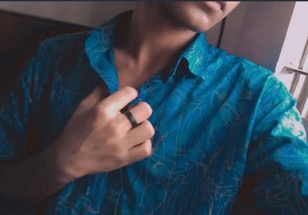

Welcome to my digital space! My name is Safoan, and I am an aspiring web developer eager to explore the vast possibilities of the tech world. I am thrilled to launch my very first published website, marking a significant milestone in my journey of learning and creation.
My fascination with technology stems from the power of code—the unique ability to transform a blank screen into something functional and impactful with just a few lines of logic. This passion for building and problem-solving is what drives me to learn and improve every single day.
Every solid structure needs a reliable foundation. To start my web development path, I have focused on mastering
Building this website has been a rewarding, hands-on experience. Transforming theoretical knowledge into a live, accessible project was both an exciting challenge and a major step forward in building my confidence as a developer.
The tech landscape is constantly evolving, and so am I. Beyond HTML, I am actively working toward expanding my skillset to include CSS, JavaScript, and modern frameworks to build dynamic, responsive, and interactive web experiences in the near future.
I believe that great code should be clean, efficient, and user-centric. By staying disciplined and curious, I strive to follow best practices in web development from the ground up, ensuring every project I work on is both accessible and well-structured.
This website serves as my living portfolio and a record of my progression as a developer. Here, I will document my growth, share my future projects, and showcase the new technologies I adopt along the way.
Thank you for taking the time to visit my page! As someone continually learning and growing, I welcome any feedback, advice, or collaboration. Feel free to explore my site and reach out—I'd love to connect with you.
| name | rate | sources |
|---|---|---|
| backrooms | 9/10 | click here | cyberpunk edgerunners | 10/10 | click here |
i am currently preparing for my hcs exam this is my first web launch